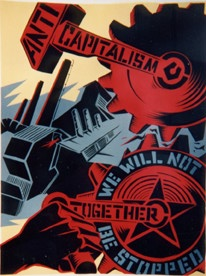

Submitted on Sun, 10/09/2005 - 5:30pm
 By Harry Harrington, aka Sathari Singh Khalsa - Industrial Worker, September 2005.
By Harry Harrington, aka Sathari Singh Khalsa - Industrial Worker, September 2005.
In June of last year the New York City Transit Authority removed me from my job as a train operator for wearing a turban. I had worked there for 23 years with a turban, nearly all as a train operator. The bosses at the MTA were quickly compelled by adverse media coverage to return me to my regular job in passenger service. The initial attempt to put me out of sight failed. My case had reached millions through TV and newspaper accounts that made the MTA officials look like narrow-minded bigots.
Not to be frustrated in their efforts to control nearly all aspects of their employees' lives, the MTA bosses then told me that I had to "pick" a job in the yard during the next job selection process if I continued to wear my turban. As a member of the worldwide Sikh community, I could not remove my religiously mandated head covering and as a union activist I could not let them violate my rights. The media campaign continued and the pick came and I did not pick a yard job but a job I had been working for the last 12 years on the number four Lexington Avenue Express line. Their threat to fire me for picking my regular job proved empty.
Submitted on Sun, 10/09/2005 - 5:16pm
By Eugene Plawiuk - Industrial Worker, September 2005.
It is time for the labour movement in Canada to grow a backbone and "Just Say No!" to working with or obeying Labour Relations Boards and their rulings.
In Alberta, recent rulings against unions include one that it's legal for Finning to outsource its work to the rat union CLAC plant. The fact that Jim Dinning, who hopes to replace Ralph as Premier of Alberta, sits on the Finning board probably influenced this decision against the Machinists whose members are having their jobs contracted out.
A disputes inquiry is being held into the Lakeside Packers strike, effectively ending the strike for 60 days, but with no guarantee of binding arbitration. The union requested binding arbitration and the Minister of Labour never responded. Lakeside Packers is owned by the world's biggest meat merchant, Tyson Foods. Tyson is happy. Their plant is operating. Supervisors are telling employees the union is powerless.
There is no fair or level playing field for workers in Alberta labour relations. The game is rigged in favour of the bosses. While unions have representatives on the Labour Relations Board, so do the bosses. In this case the government picked a management lawyer representing the anti-union Construction Industry Merit Shops as chair.
Submitted on Mon, 10/03/2005 - 3:28pm
FOR IMMEDIATE RELEASE - September 28, 2005
SUBJECT: Advance copy of op-ed piece to local NM press
TITLE: NM Labor Needs a General Strike Against Poverty.
Dear Editor,
 Recently a statewide labor leader said that "New Mexico should increase its state minimum wage to $7.15 an hour to help reduce poverty and benefit working families struggling in low-wage jobs." But while New Mexico's mis-organized labor unions insult the working class with a fantasy campaign to legislate a $2/hr increase to the minimum wage, real-life economics dictate that today's minimum wage should be at least $12.
Recently a statewide labor leader said that "New Mexico should increase its state minimum wage to $7.15 an hour to help reduce poverty and benefit working families struggling in low-wage jobs." But while New Mexico's mis-organized labor unions insult the working class with a fantasy campaign to legislate a $2/hr increase to the minimum wage, real-life economics dictate that today's minimum wage should be at least $12.
While the "Left" in New Mexico whip up another superficial political fix to deep seated socio-economic, cultural, and racial issues of poverty (re: the new minimum wage campaign), there is little evidence that much will be done to address and overcome the structural reasons for New Mexico's embarrassing poverty rate.
In a state and nation of great wealth, the existence of poverty is a crime against humanity. It reflects our material and moral priorities, not to mention the inability of our so-called "progressive" social institutions to wage a real "war on poverty."
Submitted on Tue, 09/27/2005 - 7:15pm
The South Street Workers Union asks for your support to stop the deportation of Omar Lezama de la Rosa
 September 19, 2005
September 19, 2005
Dear friends:
Omar Lezama de la Rosa, a friend to many restaurant workers on South Street, is facing deportation after being wrongly arrested in July. Below is a resolution from the Philadelphia Bar Association explaining the facts of his case.
We are organizing to show the United States Immigration and Customs Enforcement office that our brother Omar has strong support. The Immigration office has discretion in which cases it chooses to pursue, so we are trying to stop the proceedings against Omar before they get to court.
Omar has a year-and-a-half-old son and wants to keep living in Philadelphia with his family and friends.
Please sign our petition. If you are in a position to collect more signatures, please call the IWW union office at 215-222-2432.
Yours in solidarity, Nakiya Heigler and Steve Renzi for the South Street Workers Union
PHILADELPHIA BAR ASSOCIATION RESOLUTION OPPOSING ATTEMPTS TO DEPORT OMAR LEZAMA de la ROSA
Submitted on Fri, 09/23/2005 - 7:36pm
 In July 2005, an 18-month old baby is killed in her father's arms by Los Angeles police. Police justification of this -- that they were trying to "save" the baby -- reminds people of the famous Vietnam era military quote -- "We had to destroy the village in order to save the village." In Compton, police surround a truck where a man gave them the finger and fire 100 shots. In the last two years since Cau Bich Tran (a young Vietnamese mother of two) was killed while holding a vegetable peeler, there have been about a dozen police-involved killings in the San Jose area alone.
In July 2005, an 18-month old baby is killed in her father's arms by Los Angeles police. Police justification of this -- that they were trying to "save" the baby -- reminds people of the famous Vietnam era military quote -- "We had to destroy the village in order to save the village." In Compton, police surround a truck where a man gave them the finger and fire 100 shots. In the last two years since Cau Bich Tran (a young Vietnamese mother of two) was killed while holding a vegetable peeler, there have been about a dozen police-involved killings in the San Jose area alone.
Rudy Cardenas was one of those stolen lives, and state drug agent Walker who shot him in the back is going to trial for manslaughter in September. Amnesty International released a report last November documenting over 70 deaths by tasers since 2001. The Stolen Lives Project has documented an alarming escalation nationwide in the numbers of people killed by law enforcement agents. These killings march hand in hand with the repression, searches and seizures legalized by today's USA PATRIOT Act, which evoke remembrances of the COINTELPRO days of the 1960s and 70s.